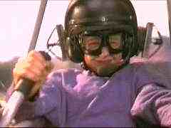

Fly Away Home
A-,BUS/1996/Color/PS 1.33:1/Stereo Surround, DD/107 minutes/Directed by Carroll Ballard/Starring Jeff Daniels, Anna Paquin/Col-Tristar/58 Chaps/$29.95
Here’s a another example of a
beautiful film delivered on DVD with less than proper treatment. Why present
this exquisitely photographed film in a 1.33 aspect ratio when it’s theatrical
composition was 1.85? The likely cop out is that it was shot full frame and
therefore the entire image is being delivered on DVD. For the most part, screen
compositions do not seem cropped, though I wondered about the wing spans on several
occasions. I can only cry out, “Give us the full potential of the DVD
medium every single time, please!”
Directed by Carroll Ballard, Fly Away
Home once again proves that a “family” film can be involving for all ages.
Ballard is the same director that made the wonderful Black Stallion, and his
affinity for animals is evident in the manner in which he treats supporting troop of geese
in Fly Away Home. A signature of Ballard films has been superb photography and such is the
case again. Teamed with Cinematographer Caleb Deschanel, Ballard delivers stunning images
of animals and nature. Mark Isham’s score highlights the excitement and beauty of Fly
Away Home.
Ballard never neglects the story in
favor of a pretty picture. The well developed script about a young girl and her inventor
father provides a fine helping of emotional involvement, charm and it’s own brand of
action. When Amy Alden loses her mother in an automobile accident across the globe,
divorced Dad Thomas Alden brings his daughter home to Canada where he practices the
eccentric life style that led to the break up of his marriage. Amy, emotionally lacerated,
bonds with a flock of geese she finds in the trees destroyed by developers. When it
is clear she cannot keep the geese at the Alden homestead, her father devises a wild
scheme to deliver the flock South to its migration territory. The film loses points on its
cheap shot portrayal of the Canadian Forest Ranger, but otherwise it is consistently
entertaining and uplifting.
Jeff Daniels plays Dad to Anna Paquin.
Paquin, follows the success of her Academy Award winning supporting role in The
Piano wisely.

The role of Amy provides the young actress with a chance to show off her ability on solid ground, and even in the air. Perennial nice guy Daniels is perfectly cast as the father with love, imagination, and determination.The wonderful images of this gorgeous film have been transferred to DVD with brilliant color. Deschanel’s marvelous images are delivered sharply and the balance of lighting maintained to perfection. The absence of grain assures that the fabulous pictures remain unsullied by video artifacts. The Dolby Digital sound brings to life the excitement of motion with details of surrounding space. The music is given a rich a full bodied treatment. Fly Away Home is luscious home theater viewing.